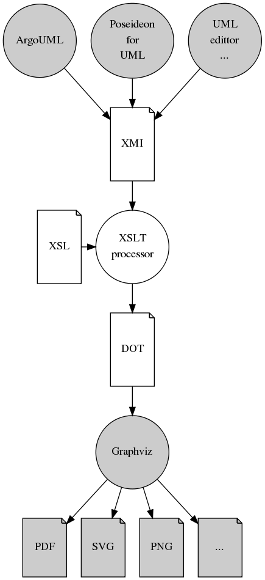
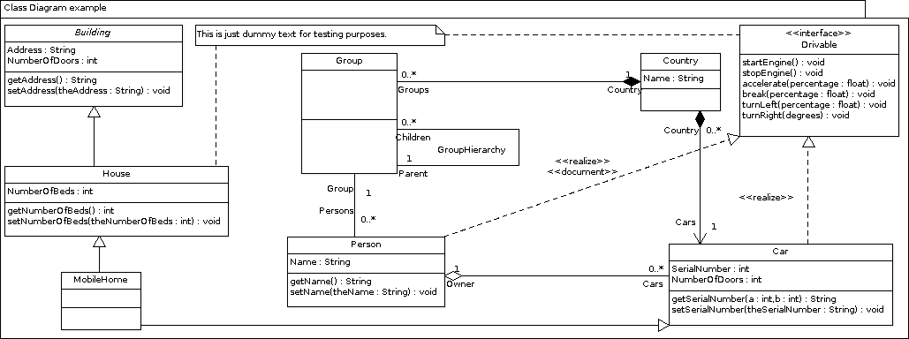
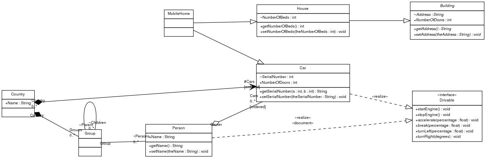

Mission
Automatically position all elements from a diagram in an output-only format by means of Graphviz (Graph Visualization Software). All UML diagrams which are stored in XMI format can be processed and exported to PDF, SVG, PNG, etcetera.
This project delivers XSL transformations for each type of diagram to answer the following use cases:
- Have Graphviz position all elements of a very large an complex UML diagram. The alternative positioning can be used as an advice to optimise the postitioning of UML diagrams.
- Have Graphviz position all elements of an UML diagram which lacks positioning. The positioning can be used to understand diagrams which have no positioning to begin with and can provide a head start for manual positioning.
The XSL transformations for each type of diagram can be used independently of ArgoUML and run directly on the XMI file. They will result in a DOT file which is processed by Graphviz. The flowchart below illustrates the different processes which apply for both use cases.

Features
At the moment the following features are supported (main elements are depicted in bold):
- Class Diagram
- UML:Abstraction
- UML:Association
- UML:AssociationEnd
- UML:Attribute
- UML:Class
- UML:Classifier
- UML:Comment
- UML:DataType
- UML:Dependency
- UML:Expression
- UML:Generalization
- UML:Interface
- UML:Model
- UML:Multiplicity
- UML:MultiplicityRange
- UML:Operation
- UML:Package (not yet completed)
- UML:Parameter
- UML:Stereotype (not yet fully completed, automated lookup in external XMI file is needed)
- UML:TaggedValue (not yet fully completed, automated lookup in external XMI file is needed)
- Use Case Diagram (not yet implemented)
- State Machine Diagram (not yet implemented)
- Activity Diagram (not yet implemented)
Example
An extensive example can be found in the test directory in the version control repository. It has been created in ArgoUML and the class diagram can be seen below.

From the XMI, the following class diagram has been extracted with the XSL transformation (development version). Note that it is not yet complete. However, it is displaying tagged values which are normally hidden. Displaying these is especially useful for diagrams which are to be processed by e.g. AchGenXML.

Related resources
- An XMI and XSL file can be processed on the command line with the XSLT command line processor called xsltproc. It can be installed with apt-get install xsltproc and used in this way xsltproc -o example-class-diagram.dot ClassDiagram2DOT.xsl example.xmi.
- Alternatively, this can be done in Java with java net.sf.saxon.Transform -o example-class-diagram.dot example.xmi ClassDiagram2DOT.xsl
- Subsequently a diagram can be created by running dot -Tpdf example-class-diagram.dot -oexample-class-diagram.pdf or dot -Tsvg example-class-diagram.dot -oexample-class-diagram.svg
- The technical implementation has been inspired by http://www.aliabdelaziz.org/Reverse_Engineering_DataBase_Part_2